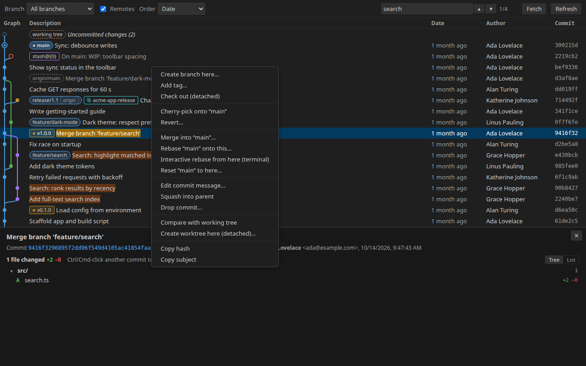

Interactive rebase in VS Code, without the terminal editor
git rebase -i is git’s tool for cleaning up a branch before others see it: fix a message, merge a fix into the commit it fixes, drop a mistake, change the order. It hands you a short plain-text plan, one line per commit, and carries it out when you save. This guide explains that plan and its commands, how to edit it in VS Code instead of Vim, the options worth knowing, and when not to rebase at all.
Quick answers
| I want to… | Run |
|---|---|
| Rework the last 5 commits | git rebase -i HEAD~5 |
Rework everything since my branch left main | git rebase -i $(git merge-base main HEAD) |
| Edit the todo list in a VS Code tab | git config --global core.editor "code --wait" |
| Rebase with uncommitted changes | add --autostash |
Fold fixup! commits in automatically | add --autosquash |
| Run the tests after every commit | add --exec "npm test" |
| Stop and put everything back | git rebase --abort |
The todo list
Give git rebase -i the commit just below the oldest one you want to change. Git opens a file named git-rebase-todo listing the commits after it, oldest first:
pick cee752e # A: add two
pick 485fdce # B: add b
pick 5974a6f # C: add three
# Rebase 3c2e146..5974a6f onto 3c2e146 (3 commands)
# ...
# These lines can be re-ordered; they are executed from top to bottom.
Each line is a command and a commit. Change the commands, move or delete lines, save and close the file, and git works through the list from the top. Lines starting with # are ignored, and an empty list cancels the rebase. Commits above the first line you changed keep their hashes; every commit after it is recreated with a new one.
git rebase -i main also works, but it moves your branch onto the tip of main at the same time if main has new commits. The merge-base form in the table above keeps the branch where it is. To include the very first commit of the repository, use git rebase -i --root.
The commands
| Command | What it does | Guide |
|---|---|---|
pick (p) | Keep the commit as it is. | |
reword (r) | Keep the changes, stop to edit the message. | Edit a message |
edit (e) | Apply the commit, then stop so you can change it. | |
squash (s) | Combine with the commit above and edit the joined message. | Squash |
fixup (f) | Combine with the commit above and keep only that commit’s message. | Fixups |
drop (d) | Remove the commit. Deleting the line does the same. | Drop |
exec (x) | Run a shell command at this point; a failure stops the rebase. | |
| (move a line) | Change the order of commits. | Reorder |
At an edit stop git says You can amend the commit now and suggests git commit --amend. Change files, git add them, amend, then git rebase --continue. To split the commit in two instead, run git reset HEAD~1 there, commit the pieces separately, and continue. break (b) pauses at that point without changing anything. The list git shows also mentions label, reset, merge and update-ref; you will mostly see these with --rebase-merges.
Whenever the rebase stops, for an edit, a failed exec or a conflict, git status shows where it is and git rebase --abort puts the branch back as it was. The conflict guide covers continue, skip and abort.
Edit it in VS Code
Git opens the todo list, and every commit message it asks for, in its configured editor, which is often Vim. To get them as VS Code tabs, make VS Code the editor and tell it to wait until you close the tab:
git config --global core.editor "code --wait" # the todo list and commit messages git config --global sequence.editor "code --wait" # only the todo list GIT_SEQUENCE_EDITOR="code --wait" git rebase -i HEAD~3 # this once (bash, zsh)
Edit the git-rebase-todo tab, save it, and close it; the rebase goes on when the tab closes. The GIT_SEQUENCE_EDITOR variable takes precedence over sequence.editor, which takes precedence over the normal editor. Without --wait, code returns at once and git sees an unchanged list.
VS Code also has a setting, git.terminalGitEditor (off by default), that makes it the git editor for git commands run in its integrated terminal; restart the terminal after turning it on.
Useful options
--autostash. Rebase refuses to start while you have uncommitted changes (cannot rebase: You have unstaged changes). With --autostash git stashes them, rebases, and restores them. If restoring them conflicts, git says Your changes are safe in the stash and leaves them in git stash list. Make it the default with git config --global rebase.autoStash true.
--autosquash. Record a fix aimed at an earlier commit with git commit --fixup=<commit>. Its subject starts with fixup!, and --autosquash moves it under its target and marks it fixup in the todo list for you:
git commit --fixup=485fdce git rebase -i --autosquash HEAD~4 pick cee752e # A: add two pick 485fdce # B: add b fixup 59e6123 # fixup! B: add b pick 5974a6f # C: add three
--exec <command> adds an exec line after every commit, a cheap way to check that each commit on its own still builds or passes its tests.
--rebase-merges. By default a rebase flattens merges: the commits from both sides are replayed in a straight line and the merge commit disappears. With --rebase-merges the todo list gains label, reset and merge lines that rebuild the same shape. Leave those lines alone unless you mean to change the structure.
Which commits are safe to rebase
Rebasing creates new commits and leaves the old ones behind. On commits that only you have, that costs nothing. On commits already pushed to a branch others use, it splits history: their copies still have the old commits. Rebase what you have not pushed, or your own feature branch before review, and update the remote with git push --force-with-lease. Leave shared branches such as main alone and use git revert there instead. Right after a rebase finishes, git reset --keep ORIG_HEAD undoes it; after that, look in the reflog (see the undo guide).
Do it in Mergeline
For the common edits you do not need the todo list at all. From Mergeline 0.7, right-click a commit on the checked-out branch (commits following first parents from HEAD, back to the first merge commit):
- Pick the edit. Edit commit message… opens a dialog with the subject and the full body. Move commit up (newer) and Move commit down (older) swap it with its neighbour. Squash into parent and Drop commit… do what they say. Ctrl/Cmd-click a second commit for Squash N commits into one…. Merge commits and commits not on the current branch are refused with a reason.
- Mergeline runs
git rebase -ifor you with a todo list it writes itself, so no editor opens, and with--autostash, so uncommitted changes are kept. It warns first when the commit is already on a remote-tracking branch, since you would need to force-push. - Undo, or finish a stopped rebase. When it finishes, the notification offers Undo (
git reset --keepto where the branch was). If a commit conflicts, a bar at the top of the graph offers Continue, Skip, Abort and Source Control; it also appears for a rebase you started in a terminal. - For anything else, such as
edit,execor several changes in one go, right-click the commit below the oldest one to change and choose Interactive rebase from here (terminal). Mergeline opens a terminal and runsgit rebase -ion that commit, using the editor you set up above.

Mergeline is not on the VS Code Marketplace yet. Download the .vsix from GitHub and run Extensions: Install from VSIX… (full steps).